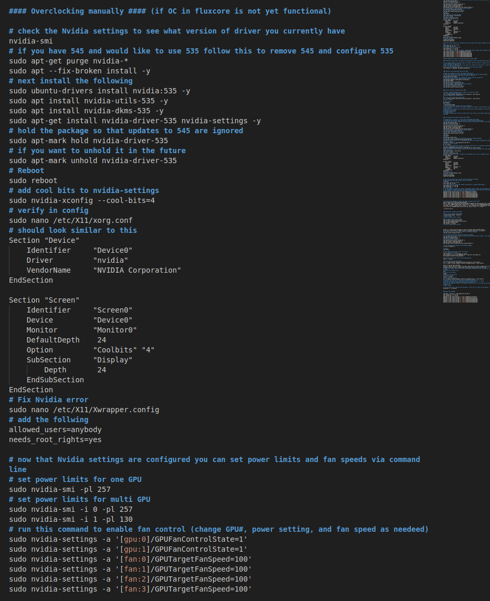

Welcome to Fluxcore and PoUW:
This guide will assist you in your installation and configuration of Fluxcore!
Notes before you start:
A static IP is not required. You can put as many servers on the same public IP as you want. Remote servers should be on the same subnet as the workstation with the webserver in order to control them remotely
Let's dive right in!
Fluxcore is currently available for Linux (Ubuntu) and windows, with more options coming in the future.
Linux Installation:
Ubuntu 22.04 (desktop or server) is recommended, however other options may also work. Fluxcore is capable of managing all of your systems from a GUI similar to the way Hive works (assuming you have used Hive OS). One key difference is how you access the GUI. In Fluxcore, you first install fluxcore on your workstation, and host your own private webserver page for the GUI. If you only have a single system, and you will only be mining when you ar enot using it, this is all you need to do. However, if you have purpose built servers, you will want to install Fluxcore on your work station for the GUI, then add/link the remote servers in the GUI as additional machines. You can then install Fluxcore on the servers, and control them remotely from the GUI on your work station.
Configuring an initial system with webserver GUI as a standalone or central control for other servers
Step 1: Configure system with Ubuntu 22.04 Desktop. Once you have Ubuntu installed, GPU's installed and Nvidia driver 535 installed, It's time to install Fluxcore.
Step 2: Open a terminal window, or your favorite IDE. Next run the bash script for the install
curl -o setup.sh https://download.fluxcore.ai/setup.sh ; bash setup.sh

At this point you have 2 options. You can run run the bash script and enter "m" and press "Enter" This will install an instance that has to be manually started and stopped. The second option is to enter "d" and it will always run fluxcore in the background. (mining and PoUW can still be manually started and stopped at any time). Once you make your choice, it will install, and when it finishes it will prompt you for an IP to bind the webserver to. Accept the default if you dont want to be able to access the webserver to remotely start and stop mining/PoUW on this system, or use the system IP if you would like the option of remote control. If you chose the D option, you will have to manually start an instance of Fluxcore in a terminal window with the following command.
./fluxcore-linux-amd64
After this process completes (be patient) FLuxcore will automatically open in your web browser to the IP/port of the web server and allow you GUI control over FLuxcore. (if you chose Daemon install you will open your own browser window using the link it provides)Step 3: The system will do some initial checks, and will offer you the machine hash ID and the machine password. Save these values as you may need them later. Each install will have its own unique machine hash and passwrod values. You will be prompted to register an account. At the time of writing this, only the google log in works, but the Dev team is working hard to get the other options working as well. You will also be pompted to set up Two Factor Authentication. Any of the common 2FA applications should work for this. If 2FA applications are new to you, hop onto youtube and watch a quick video on how to set up Authy (or similar). Once you get logged in, you should now see the following screen. Go ahead and personalize the application, configure your public wallet address, and install the mining module.
(fluxcore will continue to run in your terminal window. Don't close it!)
Step 4: Set up your mining profile, by clicking "mining" on the left side, then select the machine you want to configure under "my machines". Select coin, pool, wallet, (choose configure your saved wallets, then paste your deposit address into the field along with the name of the coin so it is obvious what this wallet is for in the future) lastly select the GPU's to assign to this mining profile and save the config. This is the screen where you configure a mining profile.

Step 5: Set up proper "overclocks" for the GPU's before configuring fluxcore to mine or running any benchmarks. While OC settings are of great debate, what is most important is limiting power, and managing fan speeds so that the GPU's don't overheat. Flux core has the ability to manage these settings internally, however at the time of writing this, GPU fan control was not yet functional.
You can get to the Fluxcore OC settings by going to "Account" on the left side, then choosing "OC Profiles"

Step 6: Your fluxcore installation is complete now! However, you may need a method to power limit the GPU and control the fan speeds until the Fluxcore software is capable of doing it. Hopefully the below instructions will help you while the Fluxcore software development continues. Additional Notes: At the time of writing this, Fluxcore and Ubuntu desktop was automatically installing Nvidia 545 drivers, and I have been unable to get 545 to stop throwing errors while attempting to use the nvidia-settings package to allow GPU fan control. Feel free to attempt to get the 545 drivers working, but if you run into this issue, you can use the below method to remove 545 and install 535 then have GPU fan control via command line. (or configure a script)

Add additional servers to the GUI and control remotely
Step 1: Configuring dedicated remote servers for control with your workstation: We recommend installing Ubuntu server for your remote server but other options may also work. Once you have the OS installed, run the bash script for the Fluxcore install!
curl -o setup.sh https://download.fluxcore.ai/setup.sh ; bash setup.sh
Step 2: Run the bash script and enter "d" and press "Enter" Fluxcore will attempt to install all prerequisitesincluding the Nvidia drivers. Once complete it will prompt you for an IP to bind the webserver to. You must use the server IP to be able to see it remotely, and control it from another system via the GUI. You can now paste that IP/port for the server into your workstation browser, and be able to finish the configuration. The system will run a few checks and will provide you machine hash and machine password. It is very important to write these down as you will need them in the next step and the machine password cannot be retrieved after the fact. (without reinstallation). Reboot the system.
Step 3: Once rebooted, From your workstation you can now see the server by putting the IP of the server into your browser window with :18180 on the end (example:192.168.72.162:18180) This will kick off the initial test run, and return your machine hash and machine password for linking it to another GUI. However, if you wouldlike to log into it to control it, or make changes to the server from your workstation you need to make a few changes to this file.
sudo nano /etc/hosts
Step 4: Next add the server IP as machine 1, with the next one you add as machine 2, etc. Doing this in your workstation will allow you to remote into the system, log in, and actually make changes. While this is not absolutely necessary, it can be helpful if you want to access it from multiple sources without adding it to another Fluxcore GUI. After adding: 192.168.72.162 machine1.remote.fluxcore to your hosts file, you can now access the remote server by putting this into the browser of your work station:
http://machine1.remote.fluxcore:18180

Step 5: On your workstation GUI you can also add many additional servers for remote control and configuration from a single source. Go to the Machines option on the left side, then click "+ New Machine" on the top right. Your screen should look like this. At this point you need to enter in the machine hash and machine password you were given for the server you are attaching.

Step 6: Your fluxcore installation is complete now! However, you may need a method to power limit the GPU and control the fan speeds manually. Controlling the fans on Ubuntu server is a little more involved than Ubuntu desktop because it doesnt come with the xorg package and there is no display defined. Hopefully the below instructions will help you while the Fluxcore software development continues. Additional Notes: At the time of writing this, Fluxcore was installing Nvidia 545 drivers, and I have been unable to get 545 to stop throwing errors while attempting to use the nvidia-settings package to allow GPU fan control. Feel free to attempt to get the 545 drivers working, but if you run into this issue, you can use the below method to remove 545 and install 535 and configure xorg to allow GPU fan control via command line.